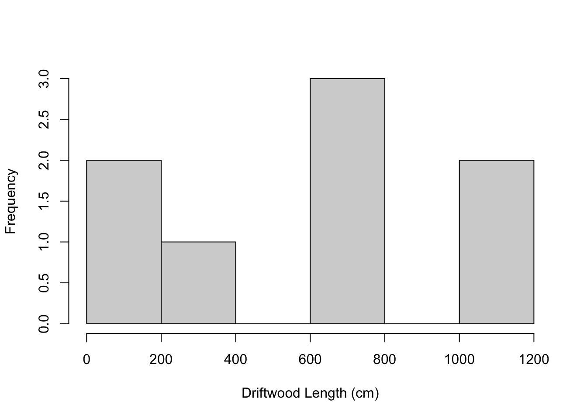
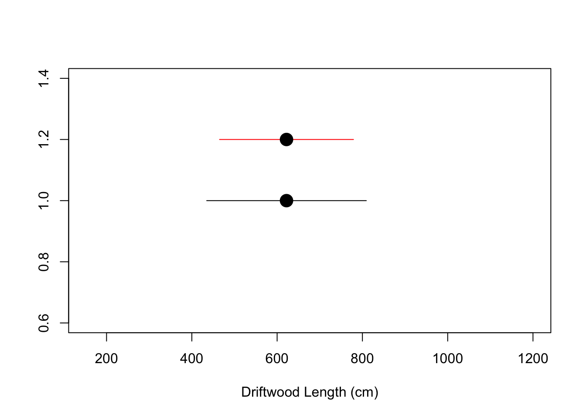

Week 4 Sampling Distributions and Confidence Intervals
This week we review the Normal distribution as a way into thinking about probability and comparing observations to a distribution.
4.1 What we cover this week
- Sampling distributions
- Sampling error
- Confidence intervals and estimation
4.2 Readings
Key sections:
- Introduction
- Sampling Distribution of the Mean
- Sampling Distribution of p
- Statistical Literacy
Key sections:
- Introduction
- Degrees of Freedom
- Confidence Intervals
- Confidence Intervals Intro
- Confidence Intervals for Mean
- Confidence Intervals for proportion
4.3 Lab
This lab is due in the Dropbox on MyLearningSpace on Friday February 26th
Our third lab will cover sampling distributions and confidence intervals. To learn about these we are going to explore a new dataset which was painstakingly collected on a beach after a large storm. Our objective here is to try to estimate the average size of driftwood on the beach. Driftwood on beaches in coastal British Columbia is very common, and most are escaped logs from logging booms - while the odd one naturally uprooted shows up as well. Tracking how driftwood accumulates in different sections of beach is a fascinating combination of where logging takes place, how logs are transported, ocean currents and storm activity, etc. There is in fact a whole job category devoted to capturing escaped logs and selling them back to the logging companies - an occupation made famous by the epic Canadian 1980s television show - The Beachcombers - set in Gibson’s B.C.
We set out to record the length of a sample of beach on the morning after a large storm. Our intended goal was to record the length of every notable log in the section of beach being sampled, but data collection had to be cut early due to an unruly field assistant. In all we collected the following 8 measurements:
x = c(653, 646, 654, 153, 305, 1200, 1193, 172)from which we can obtain a sample mean and sample standard deviation; as well as the summary command to see more descriptive statistics;
mean(x)## [1] 622sd(x)## [1] 411.5538summary(x)## Min. 1st Qu. Median Mean 3rd Qu. Max.
## 153.0 271.8 649.5 622.0 788.8 1200.0which shows that there is a lot of variability in the lengths. We also have a tiny sample size which is not great. Lets look at the frequency distribution of our sample:
hist(x, xlab="Driftwood Length (cm)", main="")
which shows the data is not normally distributed. However - we know we can use the sampling distribution of the mean to calculate the standard error of the mean even for non-normal data. Generally we want a larger sample size (n >= 30), but we will use what we have to illustrate. Recall that for the sampling distribution of \(\bar{x}\) the mean of sample means \(\mu_{\bar{x}}\) is equal to \(\mu\) and that \(\sigma_{\bar{x}}\) is equal to \(\frac{\sigma}{\sqrt{n}}\). Now, because we do not know what \(\sigma\) is - we have to use our sample estimate of it, which is \(s\) which we calculate using the sd function -
sd(x)## [1] 411.5538so we could calculate \(\frac{\sigma}{\sqrt{n}}\) using
sd(x) / sqrt(8)## [1] 145.50634.3.1 Sampling Distribution of the Mean
The sampling distribution for our mean is estimated as coming from a normal distribution with \(\mu = \mu_{\bar{x}}\) and \(\sigma_{\bar{x}}\) = \(\frac{\sigma}{\sqrt{n}}\). Let’s pretend we knew the actual values of \(\mu\) and \(\sigma\) and use the following two values for the population, a \(\mu\) of 860 and a \(\sigma\) of 270.
The z-score of the sample mean is:
\(z = \frac{\bar{x}-\mu}{\sigma_{\bar{x}}}\)
so the question is how unusual is the mean we observed in our small sample? We can use the normal distribution as we have previously using the pnorm function. Let’s calculate the z-score:
(mean(x) - 860) / (270/sqrt(8))## [1] -2.493206right away we should notice a couple of things with this z-score;
- The z-score is below 0 and therefore \(\bar{x} < \mu\)
- The z-score is below -2 so this is a pretty unlikely outcome
The probability of such a z-score or lower is
pnorm(-2.493206, lower.tail = TRUE)## [1] 0.006329769Now what would have happened if everything else was the same, but our sample size was only n = 2? Then we would be looking at:
zscore = (mean(x) - 860) / (270/sqrt(2))
pnorm(zscore, lower.tail = TRUE)## [1] 0.1062715now this seems much more likely even though the sample mean stayed the same - this is because a sample statistic (or estimate of \(\mu\) using \(\bar{x}\)) is highly uncertain if we only measured 2 logs.
4.3.2 Confidence Intervals
A better way to capture the uncertainty in our sample statistic is with a confidence interval. Instead of calculating a z-score and finding a probability we invert that process - so we set the probability - which is our confidence level, then we find the associated value of z-score for this probability, then we find the interval of values around \(\bar{x}\).
A generic formula for a confidence interval is:
point estimate +/- critical value * standard error
Now let’s go through the steps above:
- Set the probability. There are common levels which we use such as 95% or 99% or 90%. We will use a 95% confidence level.
- Now we need to find a z-score associated with 95% probability. We do this by taking the inverse so 1-0.95. We could then use
qnormto find the z-score for 0.05. But this would be wrong becauseqnormgives us one-tailed probabilities and we really need two-tailed (i.e., 0.05 split into the upper and lower tails), so we would useqnorm(0.05/2)which would give us a lower z-score associated with .025 probability. This is what we use as the critical value of the confidence interval. - Now to find the interval in
Rwe just need the standard error - which we already know is \(\frac{\sigma}{\sqrt{n}}\)
So it would look something like:
z_crit = qnorm(0.05/2, lower.tail = FALSE)
lower = mean(x) - (z_crit * (270/sqrt(8)))
upper = mean(x) + (z_crit * (270/sqrt(8)))
plot(x=c(lower, upper), y=c(1, 1), type="l", xlim = c(min(x),max(x)), xlab="Driftwood Length (cm)", ylab="", col = "Black")
points(x = mean(x), y = 1, pch=20, cex=3)
#we could add another to it if we wanted
z_crit = qnorm(0.10/2, lower.tail = FALSE)
lower = mean(x) - (z_crit * (270/sqrt(8)))
upper = mean(x) + (z_crit * (270/sqrt(8)))
lines(x = c(lower, upper), y=c(1.2, 1.2), col="red")
points(x = mean(x), y = 1.2, pch=20, cex=3)
So there is a lot of extra commands here you can ignore. The key thing being that what do we notice about the second (red) interval we created? It is narrower. This is because we set the probability value to be lower (i.e., we have lower confidence) - which basically means - we can be less sure (only 90% instead of 95%) about a narrower interval - for the same data.
If you have made it this far, you may be are forgetting what the data actually represent. Recall these are driftwood lengths measured on a section of beach in B.C. We tried to sample a lot more but with no luck. The data here is used only for the purposes of illustration - but since I recorded our attempts at data collection - here is a video of our beach sampling - with some background music to set the scene. Watching this will not help with the lab but may be entertaining!
The above procedure for a confidence interval works for when we have a normally distributed test statistic, that is why we use a z-score as the critical value. In cases where we have a small sample size we can actually use another distribution - the t distribution - as the critical value. In this way we can capture the greater uncertainty associated with very small sample sizes.
We can use the qt function to get critical values from the t-distribution. Take a look at the help to see how to set the degrees of freedom.
4.3.3 Assignment
Because our dataset was terrible this week and this is a lab which we have three weeks to complete, we are doing things a little differently. It is a challenge to create datasets that are of interest to all students so instead for this lab we are going to get you to find your own. This can be as simple or as complex as you want to make it. The key point is that you collect/create the dataset yourself (i.e., this is not taken from an example elsewhere).
Try to get a sample size of at least 30. If collecting this dataset requires you going outside and measuring something - even better. Or this can be something related to sports, music, whatever interests you. Use Piazza to ask questions about suitable datasets if you are not sure. You could for example check the temperature at environment canada on this day for the past 30 years. Or you could check with goals against average for Toronto Maple Leafs goalies for the past 30 years. It is up to you - but the dataset needs to be unique to you and you will have to explain where it comes from in your write up.
Write a paragraph describing your dataset. Include how you acquired it, why you selected it, what the variable of interest is, whether there is any measurement error, sources of sampling error, bias, etc. Also include a histogram and a table with basic summmary statistics describing your dataset. The histogram and table should have descriptive captions. Include your dataset with your R commands. (out of 10)
Create 90%, 95% and 99% confidence intervals for your data (using a sample mean). Plot these on graph. Include a sentence describing what these mean and commands used to generate the answer. (out of 10)
Repeat everything for question 2 but this time use a t-critical value (i.e., you will have to use the
qtfunction to find the critical value). You can use the same or a different variable (than that used in question 2) to analyze - usesampleto create a random sample of size n = 20 if you have more than 20 observations in your dataset. (out of 10)Conduct your own analysis of the dataset. This could include calculating z-scores to find unusual values or groups of unusual values and any plots you want to explore. Write a paragrph commenting on the results and interpreting your findings. (out of 10)